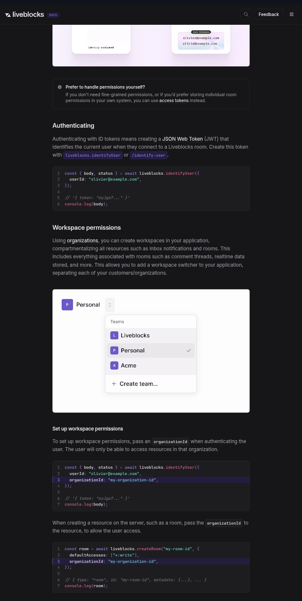

Liveblocks Developer Onboarding Audit
Finding: Organization context can drift between authentication and resource creation.
Finding: Organization context can drift between authentication and resource creation.
Liveblocks documents organizationId as the mechanism for workspace-level isolation. During authentication, developers provide an organizationId, and Liveblocks states that the authenticated user can only access resources within that organization. When creating resources such as rooms, developers also provide an organizationId. The documentation establishes both organization-scoped operations, but does not explicitly establish the alignment requirement between them: the organization context used to authenticate a user must remain consistent with the organization context used when creating the resources that user is expected to access.
A developer implementing a multi-tenant application may treat the authenticated userId as the primary identity boundary and resolve organizationId separately wherever it is required. The documentation explains how to provide the organization context in each operation, but does not prominently establish that these contexts must remain aligned throughout the resource lifecycle.

The documentation shows organizationId being used during authentication and separately during resource creation. The evidence establishes the two organization-scoped operations. The finding is about the missing explicit connection between them.
A multi-tenant application authenticates a user with one organization context but later creates a Liveblocks resource using a different, stale, missing, or incorrectly resolved organization context.
The authentication operation can succeed while the resource operation is operating against a different tenant context.
This can leave the application with an inconsistent state:
Authenticated user → Organization A
Created resource → Organization B
The resulting behavior could include resources being associated with an unintended organizational context or users being unable to access resources that the application believes belong to their tenant.
Explicitly document the organization-alignment invariant between authentication and resource creation.
Show a multi-tenant example where the organization context is resolved once and reused across the integration.
Provide clearer validation or errors when applicable organization contexts are inconsistent.
Make the recommended SDK/API pattern make organization context difficult to resolve independently at different points in the application.
Tenant-specific collaboration features can become inconsistent even though authentication itself is working correctly. That can lead to inaccessible rooms, incorrect resource ownership, customer-facing confusion, support escalations, and costly remediation if resources have already been created under the wrong organizational context.
This finding does not claim that a mismatched organizationId causes cross-tenant data exposure. The documentation reviewed does not establish that behavior. The defensible finding is narrower: the tenant-context relationship between authentication and resource creation is not made explicit enough to prevent developers from treating the two contexts independently.
Tenant context mismatch is a data-integrity issue — resources landing under the wrong org can be hard to unwind once created. But it only fires for teams building multi-tenant architecture specifically, not every Liveblocks integration. High impact, moderate likelihood.